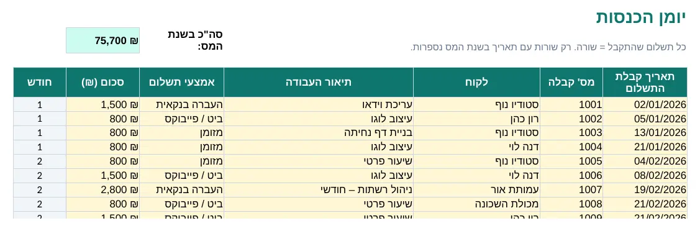
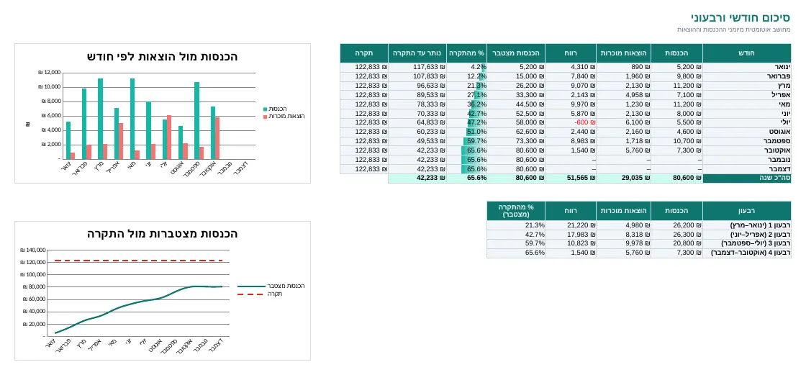
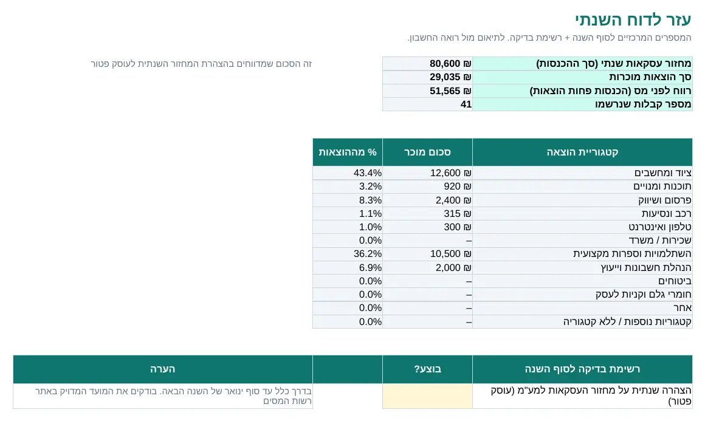

אקסל לעוסק פטור 2026: הכנסות, הוצאות ומד תקרה חי
רושמים כל תשלום בשורה אחת, והקובץ מראה כמה ניצלתם מתקרת 122,833 ₪, כמה נשאר ומתי תעברו אותה.
- Excel + Google Sheets
- בלי מאקרו
- הורדה מיידית
או נסו קודם את מחשבון התקרה החינמי ←

מה מקבלים בקובץ
מד תקרה חי
אחוז הניצול מתוך 122,833 ₪, כמה נשאר, וסימון בצהוב מ-70% ובאדום מ-90%.
תחזית לסוף השנה
לפי הקצב החודשי שלכם: מחזור צפוי, החודש שבו צפוי לעבור את התקרה, וכמה אפשר להכניס בחודש בלי לעבור.
יומן הכנסות
תאריך, מספר קבלה, לקוח ואמצעי תשלום. מקום ל-500 תשלומים, עם בדיקת תאריכים וסכומים.
יומן הוצאות
11 קטגוריות (אפשר לשנות), אחוז מוכר להוצאות מעורבות כמו טלפון ורכב, וסימון מסמכים חסרים.
סיכום חודשי ורבעוני
הכנסות, הוצאות ורווח לכל חודש ולכל רבעון, עם גרפים של הכנסות מול הוצאות ומצטבר מול התקרה.
עזר לדוח השנתי
מחזור שנתי, הוצאות לפי קטגוריה, רווח, מספר קבלות ורשימת בדיקה של מסמכים לסוף השנה.
ככה זה נראה
צילומי מסך מהעותק עם נתוני הדוגמה שמצורף לקובץ.



איך זה עובד
ממלאים הגדרות
שם העסק, שנת המס והתקרה (כבר מעודכנת ל-122,833 ₪). פעם אחת.
רושמים תשלומים והוצאות
שורה לכל קבלה ולכל הוצאה. התאים הצהובים הם היחידים שממלאים.
מסתכלים על לוח הבקרה
כל השאר מחושב לבד: תקרה, תחזית, סיכומים ודוח שנתי.
מעקב עוסק פטור 2026 – ₪39
תשלום מאובטח ב-PayPal (גם בכרטיס אשראי בלי חשבון PayPal). ההורדה נפתחת מיד אחרי התשלום.
משתלם יותר יחד: חבילת עצמאים – מעקב עוסק פטור + תבניות הצעת מחיר.
שאלות נפוצות
למי הקובץ מתאים?
לכל מי שרשום כעוסק פטור (או עומד להירשם) ורוצה לדעת בכל רגע כמה הכניס, כמה הוציא וכמה נשאר עד התקרה – פרילנסרים, מורים פרטיים, מעצבים, צלמים, מטפלים ובעלי עסקים קטנים.
האם זה מחליף פנקס קבלות או תוכנת הנהלת חשבונות?
לא. עוסק פטור צריך להוציא קבלות בפנקס או בתוכנה מאושרת. הקובץ מתעד את הקבלות וההוצאות ומרכז את המספרים, כדי שתדעו איפה אתם עומדים ויהיה לכם קל בסוף השנה.
מה קורה בשנה הבאה, כשהתקרה מתעדכנת?
בגיליון 'הגדרות' משנים את שנת המס ואת סכום התקרה (שני תאים), וכל החישובים מתעדכנים. התקרה מתעדכנת בדרך כלל בינואר.
זה עובד ב-Google Sheets?
כן. מעלים את הקובץ ל-Google Drive ופותחים באמצעות Google Sheets. כל הנוסחאות עובדות; ייתכנו הבדלים קטנים בעיצוב הגרפים. עובד גם ב-Excel למחשב, ב-Excel Online וב-LibreOffice.
יש בקובץ מאקרו או משהו שצריך להתקין?
לא. זה קובץ אקסל רגיל עם נוסחאות בלבד, בלי מאקרו ובלי תוספים.
איך מקבלים את הקובץ?
מיד אחרי התשלום ב-PayPal נפתח עמוד הורדה עם הקובץ הריק ועם עותק עם נתוני דוגמה.
האם הקובץ נותן ייעוץ מס?
לא. הוא כלי לסדר ומעקב. בשאלות על חובות דיווח, מעבר לעוסק מורשה או ניכוי הוצאות – פנו לרואה חשבון או ליועץ מס.
אפשר לבטל ולקבל החזר?
זה מוצר דיגיטלי שנמסר מיד להורדה. פרטים מלאים בתנאי הרכישה ומדיניות הביטולים.